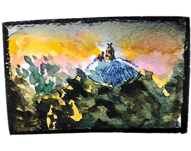

The Unbearable Well is a gamejam game with, if I do say so myself, a healthy helping of charm
and a characteristic lack of polish. I helped out in whatever way I could, animating pixelsprites
in addition to my sonic duties. That said, I was still responsible for all of the music,
as a break from staring at an animated bear-butt.
If this thrilling pitch has caught your attention, The Unbearable Well is still
available
to play on itch.
main menu track
level track